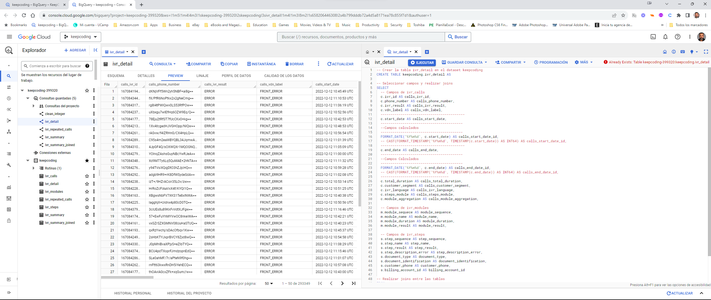

MySQL Portfolio
Proyectos de Base de Datos
Esta sección destaca algunos de los proyectos de base de datos que he realizado utilizando MySQL.
Gestión de Flota de Vehículos
Este proyecto se centra en la gestión eficiente de la flota de vehículos. Mediante la implementación de un sistema de base de datos en PostgreSQL, se busca tener un control completo sobre diversos aspectos de la flota, como modelos de vehículos, marcas, grupos empresariales y más. Además, se abarcan detalles como el color del coche, matrícula, kilómetros recorridos y datos de la aseguradora. Un aspecto clave es el seguimiento de las revisiones de cada vehículo, incluyendo la fecha, kilómetros al momento y costos. El proyecto incluye un script SQL autónomo para crear y poblar la base de datos, así como archivos CSV de ejemplo para pruebas.
Tecnologías utilizadas: DBeaver PostgreSQL, SQL,
Ver Código
Análisis de Datos de IVR para Call Center
Este repositorio contiene scripts de SQL y conjuntos de datos para analizar sistemas de Respuesta de Voz Interactiva (IVR) en un entorno de call center. El objetivo es entender las interacciones de los clientes y optimizar el flujo de IVR.
Tecnologías utilizadas: PostgreSQL, Bigquery, SQL, Google Cloud.
Ver Código Nombre del Proyecto 3
Descripción corta del proyecto.
Tecnologías utilizadas: PostgreSQL, Python
Ver CódigoNombre del Proyecto 4
Descripción corta del proyecto.
Tecnologías utilizadas: PostgreSQL, Python
Ver CódigoNombre del Proyecto 5
Descripción corta del proyecto.
Tecnologías utilizadas: PostgreSQL, Python
Ver Código